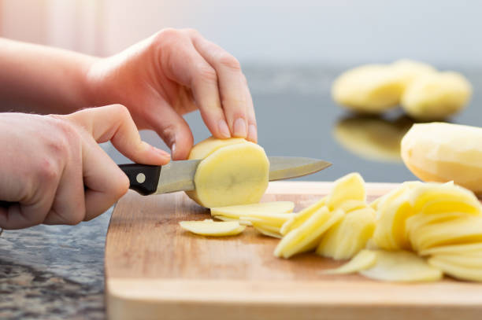

Sobre la Tortilla de Patatas
La tortilla de patatas, también conocida como tortilla española, es uno de los platos más emblemáticos de la gastronomía española. Se elabora con pocos ingredientes, pero su sabor es inconfundible. La receta básica consiste en huevos, patatas y cebolla, aunque hay variantes que incluyen otros ingredientes como pimientos o chorizo.
La tortilla de patatas se puede comer tanto caliente como fría y es un plato que se sirve en casi todos los bares y restaurantes de España. Se puede disfrutar como tapa, como plato principal o en bocadillo.
Ingredientes
- Patatas 700 g
- Huevos 300 g
- Cebolla 150 g
- Aceite de oliva 30-50 g
- Sal A gusto
Elaboración
1. Pelar las patatas y cortarlas en finas rodajas o en trozos pequeños, dependiendo de la preferencia.

2. Calentar abundante aceite de oliva en una sartén grande a fuego medio.
3. Añadir las patatas y la cebolla, previamente cortada en juliana, al aceite y cocinar a fuego lento hasta que estén tiernas (aproximadamente 20 minutos).
4. Batir los huevos en un bol grande y añadir una pizca de sal.
5. Escurrir las patatas y la cebolla del aceite y mezclarlas con los huevos batidos.
6. Verter la mezcla en una sartén con un poco de aceite caliente y cocinar a fuego medio, dando la vuelta a la tortilla cuando esté cuajada por un lado (esto puede ser complicado, pero con práctica se consigue).
7. Una vez que la tortilla esté cocida por ambos lados, retirar del fuego y dejar reposar unos minutos antes de servir.